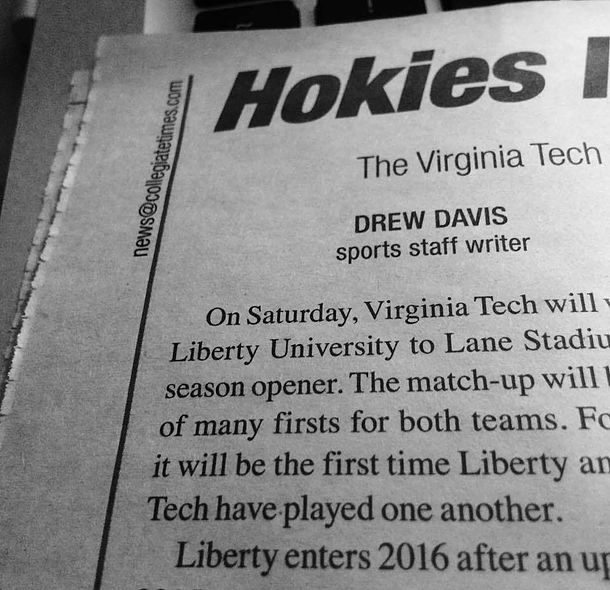

For me, life has always been surrounded by sports and that all started in Blacksburg, Virginia.
When my sister decided to go to Virginia Tech, from my small hometown of Stuart, Virginia, I was only nine. We soon went to Hokies games, and I began to love watching football, basketball, and really every sport I could see in the NCAA.
Wanting to branch out led me to watch new sports leagues like, the NFL, NBA, MLS, and FIFA. I had found a love I never knew I had. I started thinking of making my love of sports not just a hobby but a career.
I started working towards being a writer. Going back to where it all began, Virginia Tech offered me the chance to further my education.
Since being in Blacksburg, I have started my major of Communication and got real-world experience. I was able to begin writing and posting for sports at The Collegiate Times (CT). Going into the community, learning how to do interviews, recordings, writing, for sports taught me first-hand knowledge.
Under Communication, I was required to take a minor and I chose English to further help my writing skills. Within the English minor, I found my way into Writing and Digital Media.
Overall, I think my interests and Writing and Digital Media overlap a lot. Though this class involves more of the creation of writing and knowledge templates, at the end of the day it still comes down to writing. English 3844 wants to help a writer's voice best be heard. Anyway I can better improve my skill and my voice fuels my passion at writing.
In my Writing and Digital Media class, I first learned about the VT-shaped student, the title of my homepage. The learning model wants students in Blacksbug to help create classes, have more worldly experience, and problem solving skills. For me this was weird; I already thought Virginia Tech was doing this for me.
I mentioned my opportunity and writing for the Collegiate Times. I have gained a great deal of professional experience from it. I was now a part of the sports I came to love with my sister. I have learned how to adapt should I have reporting problems, such as interviewing international players; I had to work to help them see my questions. Lastly, I am currently in Broadcast Performance for my major. With professor Bill Roth, our class helps pick the projects we work on. Really I am already doing all the elements of the VT-shaped student.